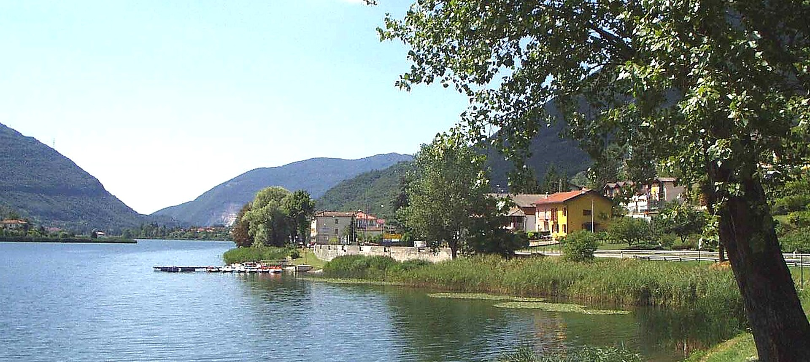
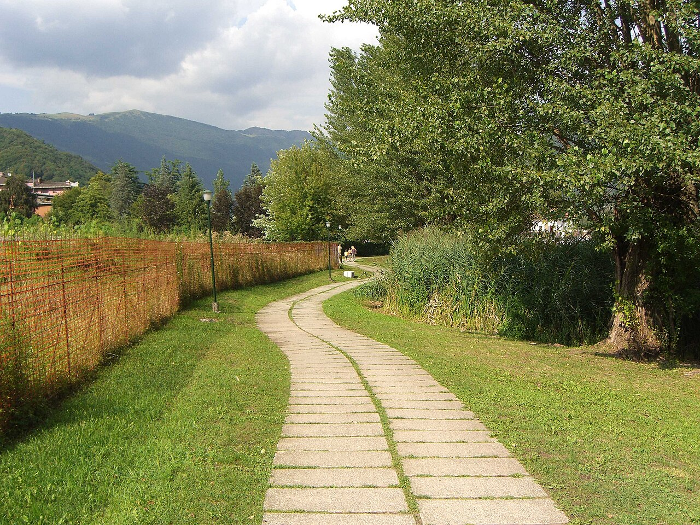
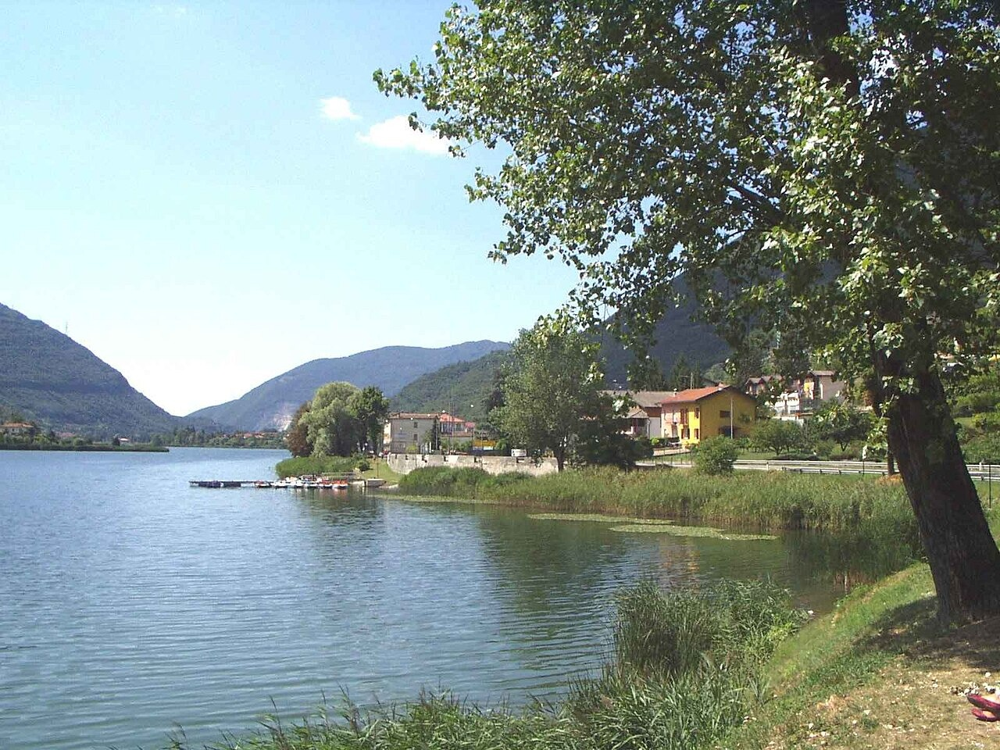
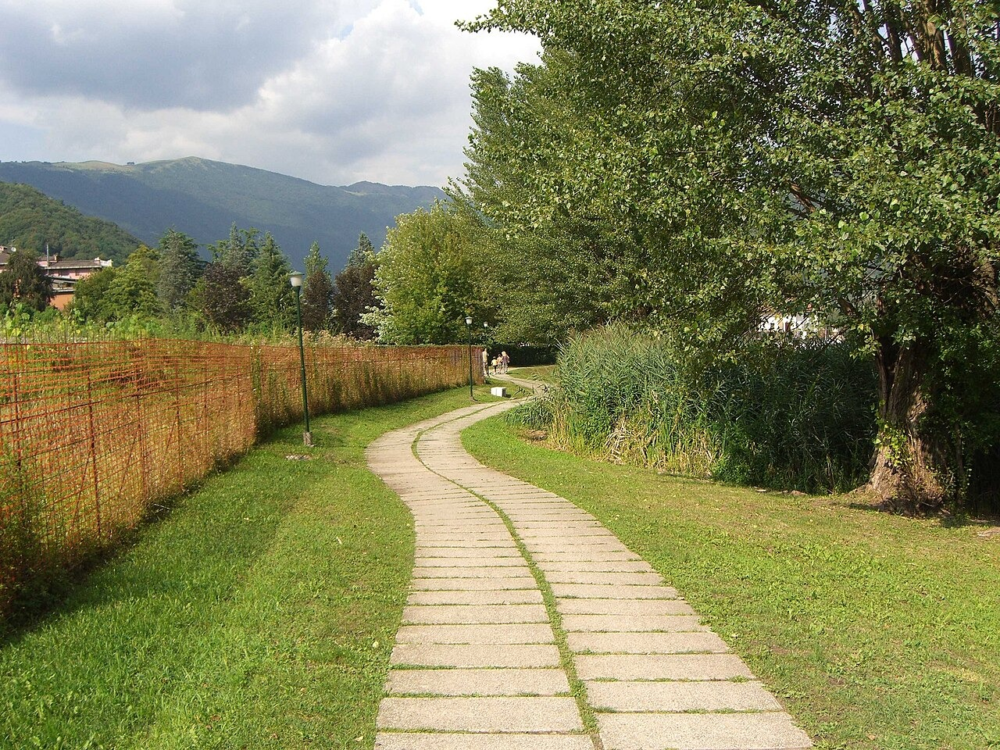
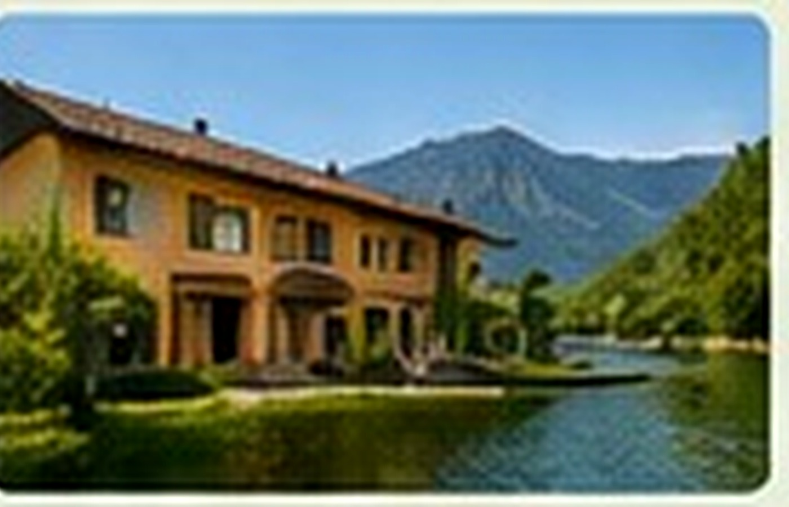
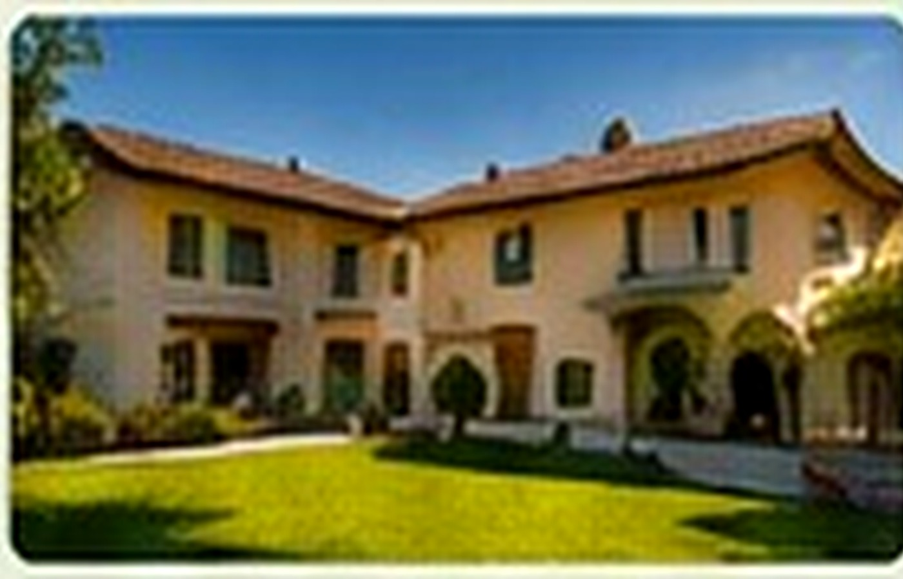
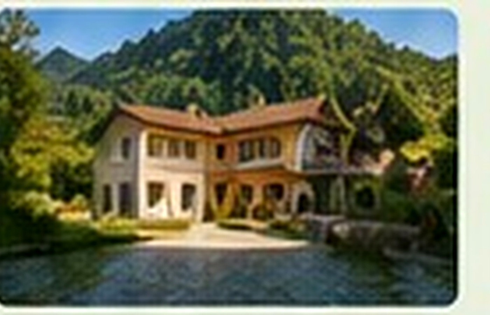
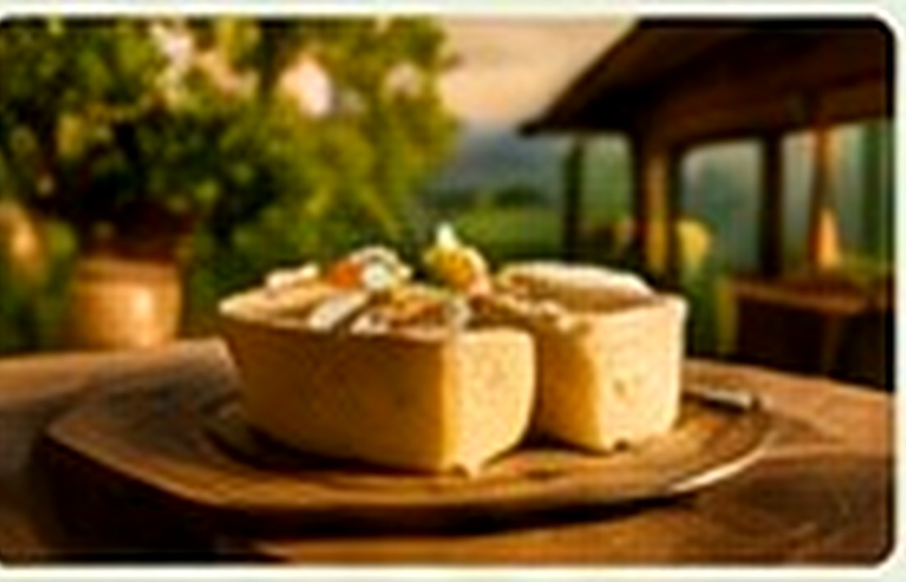

Ranzanico
Un borgo disposto sul versante, con scorci panoramici sul lago e percorsi che salgono verso il verde.
Scopri un lago raccolto e sorprendente nel cuore della Val Cavallina: passeggiate sul lungolago, piccoli borghi, paesaggi verdi, sapori locali e strutture selezionate.
SCOPRI I COMUNIIl Lago di Endine, nel cuore della Val Cavallina in provincia di Bergamo, è una destinazione raccolta e autentica, ideale per chi desidera alternare natura, piccoli borghi e momenti di tranquillità. Il paesaggio si può conoscere attraverso le passeggiate sul Lago di Endine, i lungolaghi, i punti panoramici e le strade che collegano Ranzanico, Spinone al Lago, Monasterolo del Castello ed Endine Gaiano.
Questa guida raccoglie informazioni utili per capire cosa vedere sul Lago di Endine, scegliere dove dormire sul Lago di Endine, trovare ristoranti, trattorie e agriturismi e organizzare una giornata, un fine settimana o una sosta più lunga. I contenuti sono progettati per restare utili nel tempo: niente eventi o offerte temporanee, ma guide evergreen dedicate a borghi, natura, sapori, ospitalità e informazioni per arrivare e muoversi.
Tra i luoghi simbolo del territorio rientrano il Castello di Monasterolo, i panorami di Ranzanico, le rive di Spinone e il sistema naturale che comprende anche il vicino Lago di Gaiano. Per una visita ben organizzata puoi partire dalla sezione dedicata ai quattro comuni del Lago di Endine e proseguire con le guide tematiche della Val Cavallina.

I quattro comuni affacciati sul Lago di Endine permettono di costruire itinerari differenti ma vicini tra loro: Ranzanico per i panorami dall’alto, Spinone al Lago per le rive e le passeggiate, Monasterolo del Castello per il borgo e il castello, Endine Gaiano per il paesaggio naturale e l’accesso alla parte settentrionale della valle.
Un borgo disposto sul versante, con scorci panoramici sul lago e percorsi che salgono verso il verde.

Una località affacciata sull’acqua, adatta a passeggiate, soste rilassanti e attività all’aria aperta.

Un centro storico raccolto, noto per il castello e per il rapporto diretto tra architettura, giardini e lago.
Il territorio più esteso del lago, tra frazioni, sponde tranquille e collegamenti verso l’alta Val Cavallina.
Guide evergreen per scegliere cosa fare sul Lago di Endine: passeggiate, natura, borghi, luoghi da vedere e sapori della Val Cavallina, con collegamenti alle pagine di approfondimento.

Percorsi facili, lungolaghi e camminate panoramiche.

Il paesaggio del lago, i boschi e gli habitat da osservare.
Borghi, architetture, punti panoramici e luoghi simbolo.

Prodotti, cucina locale e tradizioni del territorio.
Paesaggi verdi, acqua, boschi e percorsi adatti anche a una visita breve o a una giornata lenta.
Quattro comuni vicini tra loro, ognuno con scorci, storie e punti di interesse differenti.
Strutture ricettive e ristoranti presentati come vetrina per conoscere l’offerta del territorio.

Strutture e servizi del territorio

Ospitalità familiare e soggiorni brevi

Soluzioni indipendenti per il soggiorno
Il portale presenta le strutture come vetrina informativa. Contatti e richieste vengono gestiti direttamente dalle singole attività.
Cucina locale e proposte contemporanee

Sapori genuini e rapporto con il territorio
Ambienti informali e cucina conviviale
Schede descrittive pensate per aiutare il visitatore a conoscere le attività presenti nei diversi comuni.
Usa questi collegamenti per passare dalla panoramica del territorio alle guide dedicate ai comuni, alle passeggiate, alle strutture ricettive, ai ristoranti e alle informazioni pratiche.
Conosci i quattro comuni e scegli da quale iniziare.
ESPLORA I COMUNI →Luoghi, panorami, architetture e punti di interesse.
APRI LA GUIDA →Percorsi lungo il lago e itinerari nella natura.
SCOPRI I PERCORSI →Consulta le vetrine delle strutture ricettive.
VEDI LE STRUTTURE →Scopri ristoranti, agriturismi e locali del territorio.
VEDI I LOCALI →Come arrivare, muoversi e preparare la giornata.
ORGANIZZA LA VISITA →Risposte sintetiche ai dubbi più comuni, con collegamenti alle guide di approfondimento.
Il Lago di Endine si trova in Val Cavallina, in provincia di Bergamo. È circondato dai territori di Endine Gaiano, Monasterolo del Castello, Ranzanico e Spinone al Lago. Consulta la guida su come arrivare al Lago di Endine per orientarti tra auto e collegamenti locali.
I quattro comuni affacciati sul lago sono Ranzanico, Spinone al Lago, Monasterolo del Castello ed Endine Gaiano. Ogni località dispone di una pagina dedicata con cosa vedere, passeggiate, ospitalità e ristorazione.
In una giornata puoi unire una passeggiata lungo la riva, la visita a uno dei borghi e una sosta panoramica. Tra le tappe più rappresentative rientrano il borgo e il Castello di Monasterolo, le vedute da Ranzanico e i lungolaghi di Spinone ed Endine Gaiano. Trovi altre idee nella guida cosa vedere sul Lago di Endine.
Il territorio offre tratti pianeggianti vicino all’acqua, percorsi tra i comuni e itinerari che salgono verso punti panoramici della Val Cavallina. Prima di partire è opportuno verificare lunghezza, dislivello e condizioni del percorso nella sezione passeggiate e itinerari sul Lago di Endine.
Sì, soprattutto scegliendo lungolaghi, aree verdi e percorsi semplici. La dimensione raccolta del territorio consente di alternare brevi camminate, soste nei borghi e momenti all’aperto. La pagina Lago di Endine con bambini raccoglie indicazioni e idee adatte alle famiglie.
Nei comuni del lago e nella Val Cavallina sono presenti hotel, bed and breakfast, appartamenti, case vacanza e altre forme di ospitalità. Il portale funziona come vetrina informativa: consulta dove dormire sul Lago di Endine e contatta direttamente la struttura scelta.
L’offerta comprende ristoranti, trattorie, pizzerie e agriturismi distribuiti nei comuni del lago e nei dintorni. Nella sezione dove mangiare sul Lago di Endine puoi esplorare le attività per località e tipologia, senza prenotazione gestita dal portale.
Il lago può essere visitato durante tutto l’anno: primavera e autunno favoriscono passeggiate e panorami, l’estate invita a vivere maggiormente le rive, mentre i mesi più freddi offrono un’atmosfera tranquilla. La scelta dipende dalle attività previste e dalle condizioni meteorologiche del giorno.
Per un weekend puoi dedicare il primo giorno ai borghi e ai principali luoghi da vedere, e il secondo a una passeggiata o a un itinerario nella Val Cavallina. La guida weekend sul Lago di Endine collega comuni, itinerari, ristoranti e strutture ricettive.
No. Endine Sapori e Soggiorni è una guida e una vetrina territoriale: non gestisce disponibilità, pagamenti o prenotazioni. Dalle schede puoi raggiungere i contatti messi a disposizione dalle singole attività. I gestori interessati possono consultare la pagina Pubblica la tua struttura.